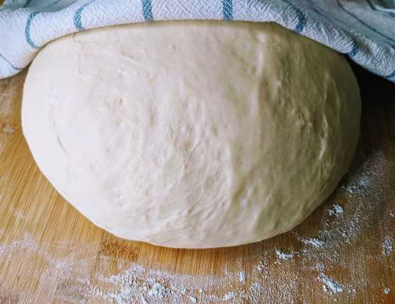
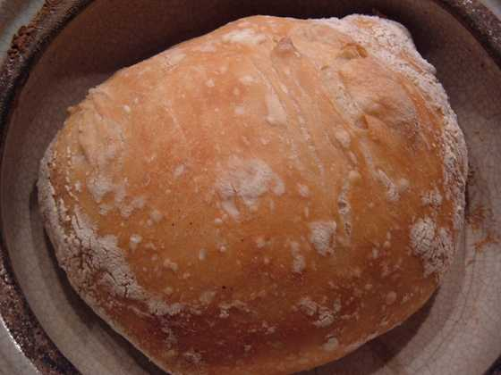
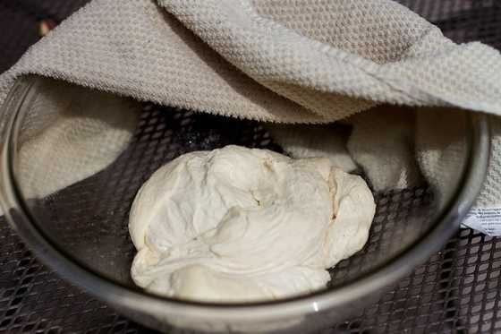
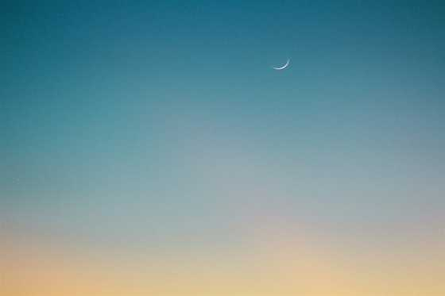

ABOUT
朝のためのパン屋
Instagramのプロフィールによると、パンカリネは朝7時から売り切れ次第閉店のパン屋で、定休日は水曜日、月江寺駅から徒歩5分。「カメラ屋さんの左の緑のテントが当店です」と案内されています。
投稿からは、クロワッサンやプレッツェルなどのパンや焼き菓子が並ぶ様子がうかがえます。
店名の意味・由来、オーナーの想いは確認できていません。営業時間などは変更される場合があるため、最新情報はInstagramでご確認ください。

BREAD
パンのこと
パンの種類・価格は準備中です。下の写真はフリー素材のイメージで、お店の商品ではありません。








VOICE
口コミ(イメージ例)
以下は制作側が作成したイメージ例で、実在のお客様の声ではありません。
イメージ例
朝早くから開いているので、出勤前に立ち寄れるのがうれしいです。
イメージ例
焼き色のきれいなパンが並んでいて、どれにするか迷いました。
イメージ例
緑のテントが目印で、駅から歩いてすぐ見つけられました。
ACCESS
アクセス・ご案内
| 所在地 | 〒403-0013 山梨県富士吉田市緑ケ丘１丁目２−４ |
|---|---|
| 電話 | 準備中 |
| 営業時間 | 準備中(Instagramでは7:00〜売り切れ次第閉店と案内) |
| 定休日 | 準備中(Instagramでは水曜日と案内) |
| 価格・メニュー | 準備中 |
| SNS | Instagram @pan.karine25 |